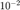

Q3
Contents
To remove the periodic noise, we apply a notch filter. The steps are given below:
- Pad the HxW image to get a 2Hx2W image.
- Calculate the 2D Fourier Transform.
- Examine the log magnitude plot to find the noise frequency. We found the periodic noise pattern at (u, v) bins: (277, 267) and (237, 247). (Since the image is real, the plot is symmetric about the centre frequency.)
- Apply a notch filter centred at (x,y). The notch filter has a one sided-window of length 7 such that the border pixels have an attenuation of 1 and as we move in towards the centre, the attenuation of all 8 pixels which are equidistant from the centre gets multiplied by .
- Calculate the inverse 2D DFT and crop out the central HxW portion. This is the final desired filtered image.